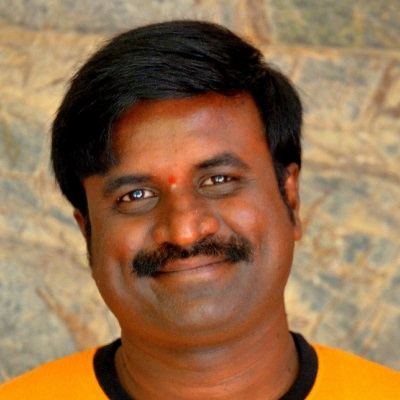
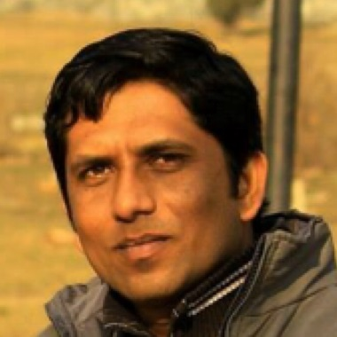

We are a bunch of enthusiastic, like-minded, fun-loving individuals coming from different backgrounds, holding different
engineering degrees, working for different IT companies, but one thing that really brought us together was the passion
to pursue our passion in indulging something creative. Since theatre was our forte, we thought of extending that passion
even further and involve ourselves in making films to quench our creative thirst. That was when by2coffee films was
formed. We learnt the art-form and started making meaningful short films which resonated hearts and minds of the people.
Winning awards at reputed film festivals provided huge boost to our confidence and gave us enough encouragement to try
something big, something new, something more challenging... and we as a team have embarked on that journey!
Bharath is the brain behind by2coffeefilms. He founded B2C with passionate filmmaking friends in 2010. He heads B2C
film division and Training initiatives.
He has fostered immense passion for direction & screenwriting and directed more than 20 film works including short-films,
music videos, travelogues and ads. Filmmaking is his childhood dream inspired by “Malgudi Days” by Sankar Nag. He has
earned himself accolades and awards at national/international level for making films with strong concept through a
professional approach. He is a skilled cinematographer and Editor too.
He hails from Siddapur (NK), Karnataka, India. He holds degrees in BE (E&C), MS (SE). He works for a reputed Indian
IT company as a Business Process Lead, currently based in Columbus, IN, USA.
Guru heads up Publicity and advertisement division of B2C. He intends to take B2C to as much people as possible. He
also oversees the content to be posted on the website.
He is the designated cinematographer for all the B2C works. He was a chance Cinematographer, who fell in love with the
camera eventually and later made a conscious decision to be one!! His cinematography works bagged B2C films national
recognitions. He is also an excellent film critic and one of the core members who ideates for B2C films. He also oversees
story development and editing. Posters designed by him for the films has caught attention.
He hails from Raichur, Karnataka, India. He holds a degree in BE (E&C). Presently, he is working in one of the IT
companies in Bengaluru.

Amar heads up Marketing & Business development at B2C. He has a rich experience in writing media articles which
is published on various media like print, online which helps B2C to promote its work.
He has immense passion in scriptwriting, lyrics and dialogues for films. He has a diverse experience as production Manager
in B2C films. He has a Kannada poetry book published to his credit titled “Olavu” and written a title track for Infosys
CSR - NeraLu
He hails from Harapanahalli, Bellary, Karnataka, India, holds BE (CS&E) degree and currently owning quality of deliveries
in core Engineering for a reputed IT company in Bengaluru.
Vivek manages technology at B2C. He is a pragmatic software engineer; and has played the role of solutions architect
and designer for many clients in the product data space.
Vivek loves the outdoors — hiking and skiing are his two favorite past-times. He is also very good at making commitments
he cannot keep; he thinks he can do everything, but there are only so many hours in a day.
Vivek was born and brought-up in Bangalore, India; but has lived in Chicago, US since 2006. He has a Master's in Computer
Science, and is currently pursuing a Ph.D. in Visual Analytics from the University of Illinois. Vivek is a Co-Founder
of a startup developing a product in the eCommerce space.

Vishwanath heads up Finance and Asset division of B2C. He also oversees legal and company related affairs.
Vishwanath has immense passion in photography which is evident by his production stills for B2C films. He has worked
as a production manager for award-winning short films from the stable of B2C. He is expert in co-ordinating team on
company affairs at various capacity to drive the strategy to a common goal.
He hails from Hirekandavadi, a remote village of Chitradurga, Karnataka, India. He holds a degree in BE (E&C). He
is presently working as a QA Specialist for a reputed IT company in Bangalore.
Sridhar heads up strategic initiatives and branding division of by2coffeefilms, He has keen interest for ideating &
strategizing a business.
He conceptualized and executed the innovative idea of advertising through paper cups in tea joints across Karnataka
for a feature film “Godhi Banna Sadharana Mykattu”, which saw a huge success. He was the president for the National
level film festival conducted by B2C, presided by renowned film-maker Girish Kasaravalli sir in 2012. His core interest
lies in story/screenplay/dialogues writing. He has directed ads and short films.
He hails from Harapanahalli, Davanagere, Karnataka India, holds BE (E&E) degree and works for a reputed embedded
company as staff design engineer in Bangalore.
Girish leads business development track for B2C. He also leads marketing and publicity divisions.
Girish is a frequent performer on stage and has appeared in everything from plays to other stage events, corporate shows
and street-plays. He is a professional actor and acted in Kannada feature films. Some of his short films as a lead
bagged him national level awards. He has directed several short-films. He has also worked as production manager for
many of B2C Films.
Girish hails from Kanakagiri, Gangavathi, Karnataka, India. He holds BE (Bio-Medical) and MS (Microelectronics). Girish
is currently working as a lead engineer at a reputed semiconductor MNC company.
Shwetha manages social media platforms and responsible for digital brand building of B2C across various social platforms.
She coordinates film festival entries of B2C films.
She has worked as an assistant/associate director, executive producer for B2C short films. She also oversees crowdfunding
opportunities for B2C. She is a trained Indian classical dancer.
Shwetha hails from Mysore, Karnataka, India. She holds BE (Information Science) and currently based out of Columbus,
IN, USA
Ashwini and Ullas head up by2coffeefilms community venture and are responsible for all the NGO activities from the company.
Their work through “My Dream - ನನ್ನ ಕನಸು”, a B2C initiative, designed with the theme “Education through Short Films”
which aims to spread awareness over social responsibilities in the minds of children has already reached more than
3000 students across Karnataka, India.